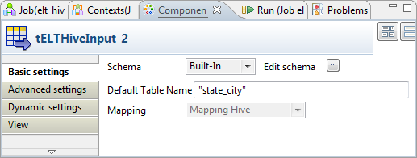
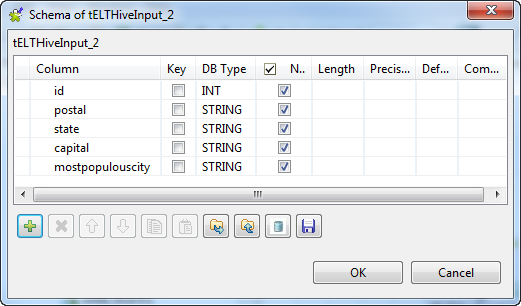
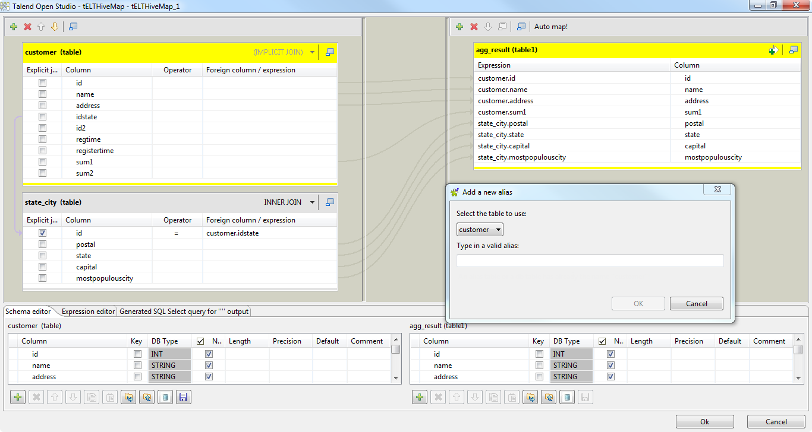
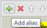

The three ELT Hive components are closely related, in terms of their operating conditions. These components should be used to handle Hive DB schemas to generate Insert statements, including clauses, which are to be executed in the DB output table defined.
|
Component family |
ELT/Map/Hive | |
|
Function |
This component uses the tables provided as input, to feed the parameter in the built statement. The statement can include inner or outer joins to be implemented between tables or between one table and its aliases. | |
|
Purpose |
This component helps to graphically build the Hive QL statement in order to transform data. | |
|
Basic settings |
Use an existing connection |
Select this check box and in the Component List click the relevant connection component to reuse the connection details you already defined. NoteWhen a Job contains the parent Job and the child Job, if you need to share an existing connection between the two levels, for example, to share the connection created by the parent Job with the child Job, you have to:
For an example about how to share a DB connection across Job levels,see Talend Data Integration Studio User Guide. |
|
|
ELT Hive Map editor |
The ELT Map editor helps you to define the output schema as well as build graphically the Hive QL statement to be executed. The column names of schema can be different from the column names in the database. |
|
|
Style link |
Select the way in which links are displayed. Auto: By default, the links between the input and output schemas and the Web service parameters are in the form of curves. Bezier curve: Links between the schema and the Web service parameters are in the form of curve. Line: Links between the schema and the Web service parameters are in the form of straight lines. This option slightly optimizes performance. |
|
Version |
Distribution |
Select the product you are using as the Hadoop distribution from the drop-down list. The options in the list vary depending on the component you are using. |
|
|
Hive version |
Select the version of the Hadoop distribution you are using. |
|
|
Connection mode |
Select a connection mode from the list. The options vary depending on the distribution you are using. |
|
|
Host |
Database server IP address. |
|
|
Port |
Listening port number of DB server. |
|
|
Database |
Name of the database. According to the documentation of Hive, the only database name supported is default. For further information, see https://cwiki.apache.org/Hive/hiveclient.html. |
|
|
Username and Password |
DB user authentication data. |
|
Hadoop properties |
Set Jobtracker URI |
Select this check box to indicate the location of the Hadoop Jobtracker service to be used. For example, we assume that you have chosen a machine called machine1 as the JobTracker, then set its location as machine1:portnumber. This property is required when the query you want to use is executed in Windows and it is
a You can keep this check box clear, when a query is executed in Windows but does not
require the Hadoop Map/Reduce framework, for example, For further information about the Hadoop Map/Reduce framework, see the Map/Reduce tutorial in the Hadoop documentation. |
|
Set NameNode URI |
Select this check box to indicate the location of the NameNode of the Hadoop cluster to be used. This property is required when the query you want to use is executed in Windows and it is
a You can keep this check box clear, when a query is executed in Windows but does not
require the Hadoop Map/Reduce framework, for example, For further information about the Hadoop Map/Reduce framework, see the Map/Reduce tutorial in the Hadoop documentation. | |
|
Advanced settings |
Hadoop properties |
If you need to use custom configuration for the Hadoop of interest, complete this table with the property or properties to be customized. Then at runtime, the customized property or properties will override those corresponding ones defined earlier for the same Hadoop. For further information about the properties required by Hadoop, see the Hadoop documentation. |
|
|
tStatCatcher Statistics |
Select this check box to collect log data at the component level. |
|
Temporary path |
If you do not want to set the Jobtracker and the NameNode when you execute the query
| |
|
Dynamic settings |
Click the [+] button to add a row in the table and fill the Code field with a context variable to choose your database connection dynamically from multiple connections planned in your Job. This feature is useful when you need to access database tables having the same data structure but in different databases, especially when you are working in an environment where you cannot change your Job settings, for example, when your Job has to be deployed and executed independent of Talend Studio. The Dynamic settings table is available only when the Use an existing connection check box is selected in the Basic settings view. When a dynamic parameter is defined, the Component List box in the Basic settings view becomes unusable. For more information on Dynamic settings and context variables, see Talend Data Integration Studio User Guide. | |
|
Usage |
tELTHiveMap is used along with a tELTHiveInput and tELTHiveOutput. Note that the Output link to be used with these components must correspond strictly to the syntax of the table name. If the Studio used to connect to a Hive database is operated on Windows, you must manually create a file called tmp in the root of the disk where this Studio is installed. NoteThe ELT components do not handle actual data flow but only schema information. | |
The ELT components do not handle any data as such but table schema information that will be used to build the Hive QL query to execute.
Therefore the only connection required to connect these components together is a simple link.
Note
The output name you give to this link when creating it should always be the exact name of the table to be accessed as this parameter will be used in the Hive QL statement generated.
Related topic: see Talend Data Integration Studio User Guide.
In the ELT Mapper, you can select specific columns from input schemas and include them in the output schema.
As you would do it in the regular Map editor, simply drag & drop the content from the input schema towards the output table defined.
Use the Ctrl and Shift keys for multiple selection of contiguous or non contiguous table columns.
You can implement explicit joins to retrieve various data from different tables.
Select the Explicit join check box for the relevant column, and select a type of join from the Join list.
Possible joins include: Inner Join, Left Outer Join, Right Outer Join or Full Outer Join and Cross Join.
By default the Inner Join is selected.
You can also create Alias tables to retrieve various data from the same table.
In the Input area, click the
 button to create an Alias.
button to create an Alias. Define the table to base the alias on.
Type in a new name for the alias table, preferably not the same as the main table.
You can also restrict the Select statement based on a Where clause. Click the Add filter row button at the top of the output table and type in the relevant restriction to be applied.
Ensure that all input components are linked correctly to the ELT Map component to be able to implement all inclusions, joins and clauses.

This scenario uses a four-component Job to join the columns selected from two Hive tables and write them into another Hive table.

Create the Hive table you want to write data in. In this scenario, this table is named as agg_result, and you can create it using the following statement in tHiveRow:
create table agg_result (id int, name string, address string, sum1 string, postal string, state string, capital string, mostpopulouscity string) partitioned by (type string) row format delimited fields terminated by ';' location '/user/ychen/hive/table/agg_result'
In this statement, '/user/ychen/hive/table/agg_result' is the directory used in this scenario to store this created table in HDFS. You need to replace it with the directory you want to use in your environment.
For further information about tHiveRow, see the section called “tHiveRow”.
Create two input Hive tables containing the columns you want to join and aggregate these columns into the output Hive table, agg_result. The statements to be used are:
create table customer (id int, name string, address string, idState int, id2 int, regTime string, registerTime string, sum1 string, sum2 string) row format delimited fields terminated by ';' location '/user/ychen/hive/table/customer'
and
create table state_city (id int, postal string, state string, capital int, mostpopulouscity string) row format delimited fields terminated by ';' location '/user/ychen/hive/table/state_city'
Use tHiveRow to load data into the two input tables, customer and state_city. The statements to be used are:
"LOAD DATA LOCAL INPATH 'C:/tmp/customer.csv' OVERWRITE INTO TABLE customer"
and
"LOAD DATA LOCAL INPATH 'C:/tmp/State_City.csv' OVERWRITE INTO TABLE state_city"
The two files, customer.csv and State_City.csv, are two local files we created for this scenario. You need to create your own files to provide data to the input Hive tables. The data schema of each file should be identical with their corresponding table.
You can use tRowGenerator and tFileOutputDelimited to create these two files easily. For further information about these two components, see the section called “tRowGenerator” and the section called “tFileOutputDelimited”.
For further information about the Hive query language, see https://cwiki.apache.org/Hive/languagemanual.html.
In the Integration perspective of the Studio, create an empty Job from the Job Designs node in the Repository tree view.
For further information about how to create a Job, see the user guide of the Studio for integration.
Drop two tELTHiveInput components and tELTHiveMap and tELTHiveOutput onto the workspace.
Connect them using the Row > Main link.
Each time when you connect two components, a wizard pops up to prompt you to name the link you are creating. This name must be the same as that of the Hive table you want the active component to process. In this scenario, the input tables the two tELTHiveInput components will handle are customer and state_city and the output table tELTHiveOutput will handle is agg_result.
Double-click the tELTHiveInput component using the customer link to open its Component view.

Click the [...] button next to Edit schema to open the schema editor.
Click the
button as many times as required to add columns and
rename them to replicate the schema of the customer table we created earlier in Hive.
To set up this schema, you can as well use the customer schema you retrieve and store in the Repository. For further information about how to set up a connection to Hive and retrieve and store the schema in Repository, see the user guide of the Studio for integration.
In the Default table name field, enter the name of the input table, customer, to be processed by this component.
Double-click the other tELTHiveInput component using the state_city link to open its Component view.
Click the [...] button next to Edit schema to open the schema editor.
Click the
button as many times as required to add columns and
rename them to replicate the schema of the state_city table we created earlier in Hive.In the Default table name field, enter the name of the input table, state_city, to be processed by this component.
Procedure 11.1. Configuring the connection to Hive
Click tELTHiveMap, then, click Component to open its Component view.

In the Version area, select the Hadoop distribution you are using and the Hive version.
In the Connection mode list, select the connection mode you want to use. If your distribution is HortonWorks, this mode is Embedded only.
In the Host field and the Port field, enter the authentication information for the component to connect to Hive. For example, the host is talend-hdp-all and the port is 9083.
Select the Set Jobtracker URI check box and enter the location of the Jobtracker. For example, talend-hdp-all:50300.
Select the Set NameNode URI check box and enter the location of the NameNode. For example, hdfs://talend-hdp-all:8020.
Procedure 11.2. Mapping the schemas
Click ELT Hive Map Editor to map the schemas
On the input side (left in the figure), click the Add alias button to add the table to be used.
In the pop-up window, select the customer table, then click OK.
Repeat the operations to select the state_city table.
Drag and drop the idstate column from the customer table onto the id column of the state_city table. Thus an inner join is created automatically.
On the output side (the right side in the figure), the agg_result table is empty at first. Click
at the bottom of this side to add as many columns as
required and rename them to replicate the schema of the agg_result table you created earlier in Hive. 
Note
The type column is the partition column of the agg_result table and should not be replicated in this schema. For further information about the partition column of the Hive table, see the Hive manual.
From the customer table, drop id, name, address, and sum1 to the corresponding columns in the agg_result table.
From the state_city table, drop postal, state, capital and mostpopulouscity to the corresponding columns in the agg_result table.
Click OK to validate these changes.
Double-click tELTHiveOutput to open its Component view.

If this component does not have the same schema of the preceding component, a warning icon appears. In this case, click the Sync columns button to retrieve the schema from the preceding one and once done, the warning icon disappears.
In the Default table name field, enter the output table you want to write data in. In this example, it is agg_result.
In the Field partition table, click
to add one row. This allows you to write data in the
partition column of the agg_result
table.This partition column was defined the moment we created the agg_result table using
partitioned by (type string)in the Create statement presented earlier. This partition column is type, which describes the type of a customer.In Partition column, enter type without any quotation marks and in Partition value, enter prospective in single quotation marks.
Press F6 to run this Job.
Once done, verify agg_result in Hive using, for example,
select * from agg_result;

This figure present only a part of the table. You can find that the selected input columns are aggregated and written into the agg_result table and the partition column is filled with the value prospective.